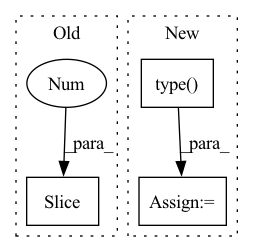

Pattern ID :40933
Before Change
if buckets != n:
context = F.pad(context, (0, 0, 0, 0, 1, 0), value=0.)
context = context[:, :-1 ]
attn_einsum_eq = "bhund,bhude->bhune" if not one_kv_head else "bhund,bude->bhune"
attn = torch.einsum(attn_einsum_eq, b_q, context)After Change
b_q, b_k, b_v = map(bucket_fn, (q, k, v))
b_k_sum = b_k.sum(dim=-2)
b_k_cumsum = b_k_sum.cumsum(dim=-2).type( dtype)
context_einsum_eq = "bhund,bhune->bhude" if not one_kv_head else "bund,bune->bude"
context = torch.einsum(context_einsum_eq, b_k, b_v)
context_cumsum = context.cumsum(dim=-3).type(dtype)
context = safe_div(context_cumsum, b_k_cumsum.unsqueeze(-1))
if bucket_size != 1:
context = F.pad(context, (0, 0, 0, 0, 1, 0), value=0.)
seq_dim = 1 if one_kv_head else 2
context, _ = split_at_index(seq_dim, -1, context)
attn_einsum_eq = "bhund,bhude->bhune" if not one_kv_head else "bhund,bude->bhune"
attn = torch.einsum(attn_einsum_eq, b_q, context)In pattern: SUPERPATTERN
Frequency: 3
Non-data size: 3
Instances Fragment ID: 115374880
Project Name: lucidrains/linear-attention-transformer
Commit Name: 44961eaab5473b3335bce02441bfd50d076d7af0
Time: 2020-06-05
Author: lucidrains@gmail.com
File Name: linear_attention_transformer/linear_attention_transformer.py
M Class Name: AnonimousClass
N Class Name: AnonimousClass
M Method Name: causal_linear_attn(6)
N Method Name: causal_linear_attn(6)
M Parent Class:
N Parent Class:
M File Name: linear_attention_transformer/linear_attention_transformer.py
N File Name: linear_attention_transformer/linear_attention_transformer.py
M Start Line: 157
M End Line: 177
N Start Line: 187
N End Line: 208
Before Change
// calculate targets
mixup = targets.shape[2] > 5
if mixup:
label_cut = targets[..., :5 ]
else:
label_cut = targets
nlabel = (label_cut.sum(dim=2) > 0).sum(dim=1) // number of objectsAfter Change
if self.use_l1:
l1_targets = torch.cat(l1_targets, 0)
if self.reid_dim > 0:
reid_targets = torch.cat(reid_targets, 0).type( torch.int64)
num_fg = max(num_fg, 1)
loss_iou = (self.iou_loss(bbox_preds.view(-1, 4)[fg_masks], reg_targets)).sum() / num_fg
loss_obj = (self.bcewithlog_loss(obj_preds.view(-1, 1), obj_targets)).sum() / num_fg
loss_cls = (self.bcewithlog_loss(cls_preds.view(-1, self.num_classes)[fg_masks], cls_targets)).sum() / num_fg
loss_l1 = (self.l1_loss(origin_preds.view(-1, 4)[fg_masks], l1_targets)).sum() / num_fg if self.use_l1 else 0.
reid_loss = 0.
if self.reid_dim > 0:
reid_feat = reid_preds.view(-1, self.reid_dim)[fg_masks]
cls_label_targets = cls_targets.max(1)[1]
for cls in range(self.num_classes):
inds = torch.where(cls == cls_label_targets)
if inds[0].shape[0] == 0:
continue
this_cls_tracking_id = reid_targets[inds]
this_cls_reid_feat = self.emb_scales[cls] * F.normalize(reid_feat[inds])
reid_output = self.classifiers[cls](this_cls_reid_feat) Fragment ID: 115374872
Project Name: zhangming8/yolox-pytorch
Commit Name: e162fc0465b1f5d8b3211cdc81fd8eabb6dd55c7
Time: 2021-07-26
Author: zhangming8@github.com
File Name: models/losses/yolox_loss.py
M Class Name: YOLOXLoss
N Class Name: YOLOXLoss
M Method Name: get_losses(9)
N Method Name: get_losses(9)
M Parent Class: nn.Module
N Parent Class: nn.Module
M File Name: models/losses/yolox_loss.py
N File Name: models/losses/yolox_loss.py
M Start Line: 94
M End Line: 206
N Start Line: 105
N End Line: 224
Before Change
// Create a cross_mask using the binary label scheme of weights and targets
for schema in label_schema:
cur_schema = torch.tensor(int_to_binary_label_list(int(schema), num_classes)[::-1 ], dtype=torch.int8)
cand_idx = weight == float(schema)
if use_vfl:
cand_idx = cand_idx.nonzero(as_tuple=True)[0]After Change
if valid_label_mask is not None:
neg_mask = targets.sum(axis=1) == 0 if use_vfl else targets == num_classes
neg_idx = neg_mask.nonzero(as_tuple=True)[0]
cross_mask[neg_idx] = valid_label_mask[neg_idx].type( torch.int8)
if use_vfl:
loss = varifocal_loss(inputs, targets,
weight=weight, Fragment ID: 115374878
Project Name: openvinotoolkit/model_preparation_algorithm
Commit Name: 422e1c4fb8c3e8efc7f584902a0cdbbb895387cd
Time: 2022-06-15
Author: harim.kang@intel.com
File Name: mpa/modules/models/losses/cross_focal_loss.py
M Class Name: AnonimousClass
N Class Name: AnonimousClass
M Method Name: cross_sigmoid_focal_loss(10)
N Method Name: cross_sigmoid_focal_loss(10)
M Parent Class:
N Parent Class:
M File Name: mpa/modules/models/losses/cross_focal_loss.py
N File Name: mpa/modules/models/losses/cross_focal_loss.py
M Start Line: 38
M End Line: 64
N Start Line: 33
N End Line: 39